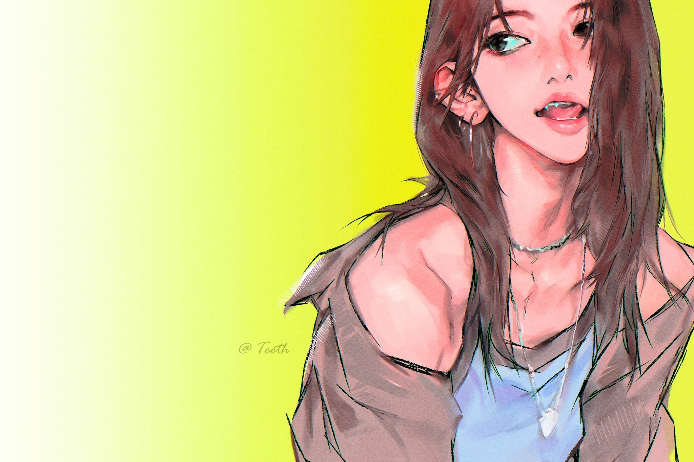
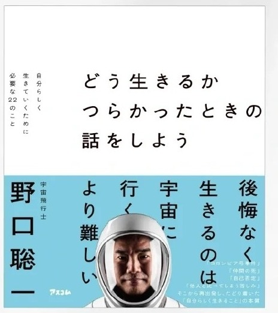

隔日刊
1
No.001
🌸サクラ新聞
まいにち、みやわきさくら
Pureflow TOUR D-1 ♡
粉发桃子姫、ツアー前夜のオフ日常

2026.07.09-10
新物料 11 図♡
sakkukku
cr｜39saku_chan（本人IG）
令和八年睦月 · 編集部
壱
サクラ新聞
今日の樱程
开巡前夜双喜临门——先是音放捧杯，接着樱樱冒泡说要去彩排。明日 Pureflow 第一场，东京见😭
🏆 今日头条
音放一位到手！
MCD「ICONIC BY MISTAKE」拿下一位——开巡前夜的最好礼物，我樱的团越来越好了🌸

候场の樱、粉发咬一口甜甜圈🍩
WEVERSE · 冒泡
樱樱：「现在要去现场彩排啦☺️」—— 第一场就在明天，紧张又期待🌸
今日の樱程
弐
サクラ新聞
美図 · 签售
MA 签售场の怼脸自拍，甜到失语🥹 粉发大眼比个耶，杀伤力拉满。

MA签售·比耶自拍✌🏻

怼脸再来一张🥹
EDITOR
这个笑容谁扛得住…粉发+奶桃针织，软到心脏骤停😭
美図 · MA签售
参
サクラ新聞
饭拍 · 近距离
WM 线下签售饭拍高清——水手服樱花叼着大力士吐司、头上还别着 sakkukku🐱 这么可爱真的犯规。

叼吐司·水手服樱🍞

近距离美貌暴击
cr｜Yeonwonie_0319 感谢站姐的神图🙏🏻
饭拍 · WM签售
肆
サクラ新聞
特集 · 饭绘
本期最佳饭绘🎨 @Teeth 笔下柠檬黄背景的樱花——含泪的眼睛看一次心颤一次，太会画了。

柠檬黄背景の樱花，绝了🎨 cr｜Teeth2333
🐱 队友
连队友都在 cue 我樱
成员「喵喵」更新带上了 #SAKURA #overwatch🐱 队友都在推我樱，人气实锤😽
特集 · 饭绘
伍
サクラ新聞
樱花書架
固定栏目 · 每期一本咲良读过的书。本期选自她的「2026年1月读过的书📕」🌸
読書
印章
印章

❀ 宮脇咲良の読書リストより
どう生きるか
つらかったときの話をしよう
つらかったときの話をしよう
野口聡一 著 ／ 宇宙飛行士
资深宇航员野口聡一写的人生随笔，副题是「毫无悔恨地活着，比宇宙飞行更难」。他把三度飞向太空的经历，酿成面对艰难、如何抉择、如何不留遗憾过日子的心得。
樱樱说 2026 是「读书让自己振作的一年」——正呼应她那句「为了未来不后悔而每天努力」🌸
樱花書架 · 第壱回
陸
サクラ新聞
今後の樱程
接下来几天，跟着樱樱的脚步不迷路🌸（日程持续更新）
11THU
TOUR
Pureflow TOUR 開幕
2026 LE SSERAFIM TOUR 第一场 · 東京
12FRI
TOUR
Pureflow TOUR Day2
巡演进行中～
–SOON
物料
amazonmusic · snapchat 物料续更
一手 IG / weverse 随时冒泡
＊具体场次与时间以官方公告为准，本栏每期更新。
EDITOR · 碎碎念
D-1就这么惬意可爱，正式开巡恐怕要萌到原地升天😭 卷毛小樱先别急着这么好看，等等我～
今後の樱程 · 完
七